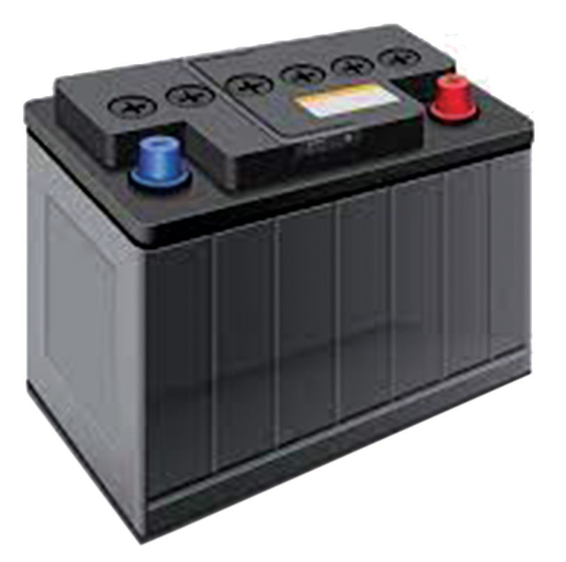

Figure 2.62: A car battery
2. They are used to provide energy to power domestic appliances such as radio, television and lighting fixtures.
3. They are used to store electrical energy produced by solar panels.
Exercise 2.5
1. With the aid of a diagram and chemical equations, describe the construction and operation of a simple cell.
2. State the defects of a simple cell and explain how these defects can be minimised.
3. Describe, with the aid of a diagram, the construction of a typical lead-acid accumulator.
4. Use appropriate diagrams to illustrate how an accumulator may be charged and discharged.
5. Three cells of e.m.f 1.5 V, 1.6 V, and 1.3 V are connected in series to supply current to an external resistor of 1.6 Ω.
The internal resistances of the three cells are 0.26 Ω, 0.35 Ω and 0.42 Ω, respectively.
Determine the current through an external resistor.
6. Four cells each of e.m.f 1.48 V and internal resistance 0.51 Ω are connected in parallel across an external resistor of 2.6 Ω.
Determine the current supplied by the battery.
7. Figure 2.63 (a) and (b) show two identical bulbs connected to one cell and two dry cells respectively.
The bulb connected to two dry cells lights up brighter.
Figure 2.63
(a) What is meant by the value “9 V” labelled on the dry cell?
(b) Explain why the bulb connected to two dry cells is brighter.